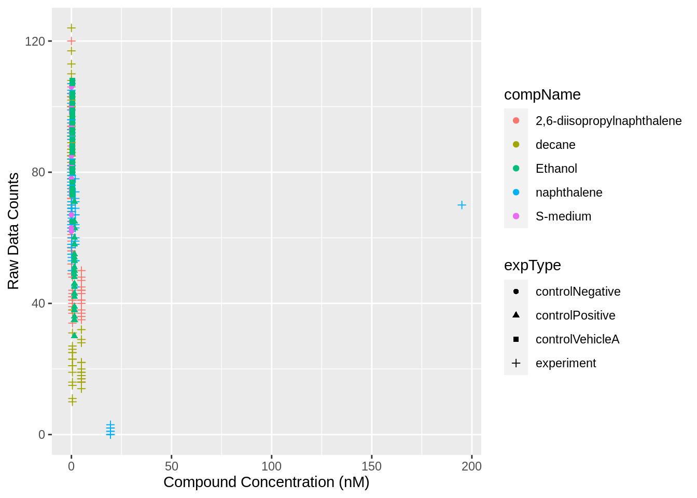
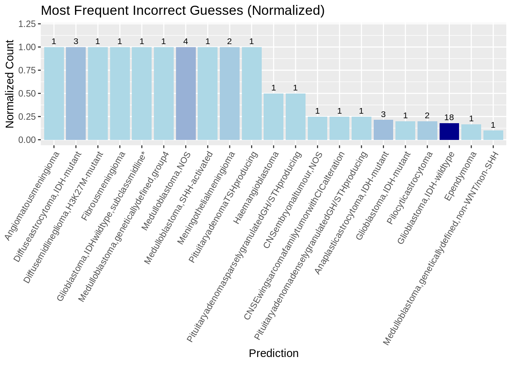
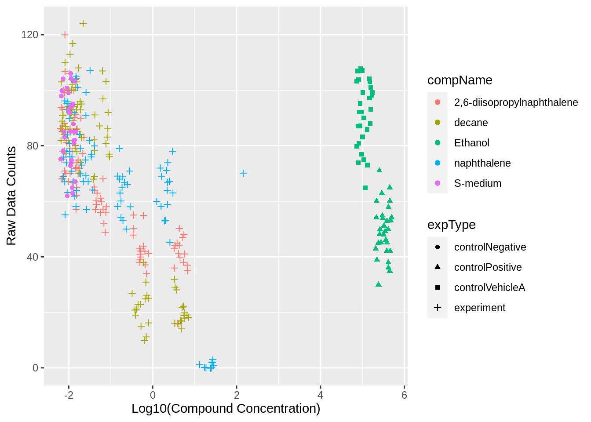

Chapter 2 Learning a New Skill
In this part I got 32 hours to do work on something I wanted to do or learn, I wanted to so something with machine learning as this is something very relevant. Ofcourse is 32 hours a bit short to learn about machine learning and create my own model so I decided to use an existing model, I settled with Sturgeon.
2.1 Planning
I started by creating a planning.
Day 1
- Read the paper about sturgeon, “Ultra-fast deep-learned CNS tumour classification during surgery”
- Trying to find data that can be used
- Sequences of tumours in the CNS
- The data should be labeled so the results can be compared
- Data ideally needs to be nanopore data
- Installing required programs(depends on the data I found)
- Sturgeon - https://github.com/marcpaga/sturgeon
- Crossmap - https://github.com/liguowang/CrossMap
- Modkit - https://github.com/nanoporetech/modkit
- Guppy - https://github.com/nanoporetech/pyguppyclient
Day 2
- Using the needed tools to prepare the data for running sturgeon.
- Try to run sturgeon on a couple of files to see how long it would take to run on all 415 files.
Day 3/4
- Run sturgeon on more, perhaps all files.
- Gather the reference diagnosis for every file.
- Visualize the data.
2.2 Planning after finding Dataset
I will be using the tool Sturgeon to clasify tumors found in the central nervous system. I will use the information in this paper “Ultra-fast deep-learned CNS tumour classification during surgery” and using this GSE209865 dataset from GEO. The data needs to be lifted using crossmap from the hg19 genome to the chm13v2.0 genome.
2.3 Results
Everything I did is documented in this Rmarkdown. But I will share some results here as well. I ended up running the analysis on all the 415 files twice, one time with the lifted data and one without lifting the data.
Let’s import the data.
library(dplyr)
library(ggplot2)
library(DT)
library(data.table)
library(fs)output_table_matched <- read.delim("sturgeon/sturgeon_dataframes/output_table_matched.tsv")
output_table_matched_raw_data <- read.delim("sturgeon/sturgeon_dataframes/output_table_matched_raw_data.tsv")Let’s check how many of the predictions were correct and how many were wrong.

Here we see that 365 of the 415 predictions were correct that’s around 88%
But sturgeon gives a confidence score the following is written in the README about the confidence score. score < 0.8: inconclusive result. 0.8 <= score < 0.95: confident result that the class is correct. score >= 0.95: high confident result that the class is correct.
Lets look at only the predictions that got a score above 0.8.

The amount of wrong predictions almost halved, of the predictions with a confidence score above 0.8 about 92.5% were correct.
And then also look at the predictions that have a high confident result > 0.95

The predictions with a confidence score above 0.95 are even more accurate with about 94,7% accuracy.
Lets take a look at the wrong predictions, lets see which reference diagnosis were guessed wrong the most

The data in the graph is normalized so bars that have a normalized count of 1 were never guessed correctly, but most of these only occur once. Glioblastoma, IDH-wildtype is guessed wrong most often but appears a hundred times in the dataset so its still guessed right more than 80% of the time. It’s also very much possible that some of the predictions that are marked as wrong might be correct but that something went wrong when translating the prediction to the reference_diagnosis form.
I noticed that the .bed files differed quite a lot in size, so i wondered whether confidence score or maybe the amount of correct prediction increased when the size of the file was bigger.
Scatterplot file size vs confidence score
There is a small correlation between file size and confidence score, The predictions with very low confidence score are always small files.
Lets take a look at the predictions from the raw_data run.
The amount of wrong predictions are exactly the same as the amount of wrong predictions when using the lifted files.
But maybe the predictions are made with less confidence
## [1] -0.0006995533The mean confidence scores of the two runs are very close to each other and the raw_data mean is even a little higher.
Lets look at the distribution of the confidence scores

The two violin plots look almost identical, running sturgeon without lifting the genome doesn’t change much about the confidence score.
Let’s see if there were instances where there was something different guessed between the two runs.
## GEO_accession reference_diagnosis.x matched_reference_diagnosis
## 48 GSM6402724 Ependymoma Pleomorphicxanthoastrocytoma
## 111 GSM6402787 Glioblastoma,IDH-wildtype Glioblastoma,IDH-wildtype
## matched_reference_diagnosis_raw
## 48 Ependymoma
## 111 Glioblastoma,IDH-mutantAs we can see there are two instances where a different guess was made, once the run with the raw_files guessed the wrong Glioblastoma type and once the run with lifted files geussed the Ependymoma wrong.
lifting the genome to CHM13v2 doesn’t seem that important at least not when working with data aligned to the hg19 genome.
2.4 Evaluation
I am very satisfied with the result of this analysis, it was a lot of fun to come up with my own ideas for what to do. And it was very satisfying to find solution on the problems I was facing. I don’t think I necessarily learned a specific new skill, but I certainly learned new things from this experience, whilst navigating my way around this analysis and the different tools, and problem solving the problem that I encountered.